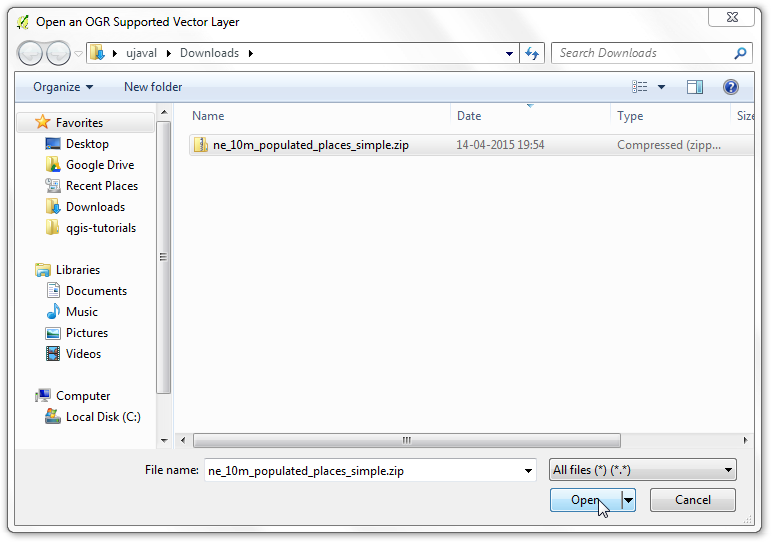
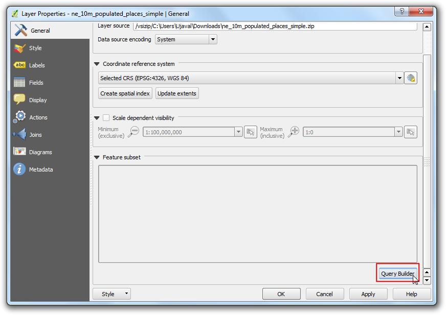

Lucrul cu Atribute
[ Download PDF
A4
Letter ]
Datele GIS sunt compuse din două părți - entități și atribute. Atributele reprezintă date structurate despre fiecare entitate. Acest tutorial vă arată cum să vizualizați atributele și cum să le interogați în QGIS.
Privire de ansamblu asupra activității
Setul de date pentru acest tutorial conține informații despre locurile populate ale lumii. Scopul este de a interoga și de a găsi toate capitalele lumii care au mai mult de 1.000.000 locuitori.
Alte competențe pe care le veți dobândi
Selectarea entităților dintr-un strat folosind expresii.
Deselectarea entităților dintr-un strat folosind bara de instrumente Attributes.
Folosirea Constructorului de Interogări pentru a afișa un subset de entități dintr-un strat.
Procedura
O dată ce ați descărcat datele, deschideți QGIS. Mergeți la .

Faceți clic pe Browse și navigați la folderul unde ați descărcat datele.

Localizați fișierul descărcat, ne_10m_populated_places_simple.zip. Nu e nevoie să-l dezarhivați. QGIS are capacitatea de a citi în mod direct fișierele zip. Selectați fișierul și faceți clic pe Open.

Straturile selectate se vor încărca în QGIS, după care vor apărea mai multe puncte, reprezentând locurile populate ale lumii.

Faceți clic-dreapta pe layer și selectați Open Attribute Table.

Explorați atributele și valorile lor.

Deoarece ne interesează populația din fiecare entitate, pop_max va fi câmpul căutat. Puteți face dublu-clic pe denumirea câmpului, pentru a sorta coloana în ordine descrescătoare.

Acum suntem gata de a efectua interogarea pe aceste atribute. QGIS folosește expresii bazate pe SQL pentru a efectua interogările.

In fereastra Select By Expression, expandați secțiunea Fields and Values și efectuați dublu-clic pe eticheta pop_max. Veți observa că ea va vi adăugată în partea de jos a secțiunii expresiei. Dacă nu sunteți siguri cu privire la valorile câmpului, puteți face clic pe Load all unique values pentru a vedea valorile atributelor care sunt prezente în setul de date. În acest exercițiu, suntem în căutarea tuturor entităților care au o populație mai mare de 1,000,000. Deci, completați expresia de mai jos și faceți clic pe Select.

Faceți clic pe Close și reveniți la fereastra principală a QGIS. Veți observa că un subset de puncte este acum randat în galben. Acesta este rezultatul interogării noastre, putându-se vedea toate locurile din setul de date care au valoarea atributului pop_max mai mare de 1,000,000.

Scopul acestui exercițiu este de a găsi acele locații care sunt capitale ale unor țări. Câmpul care conține datele este adm0cap. Valoarea 1 indică faptul că locul este o capitală. Putem adăuga acest criteriu expresiei noastre anterioare, folosind operatorul and. Să rafinăm interogarea noastră prin selectarea numai a acelor locuri care sunt capitale. Faceți clic pe butonul Selectați caracteristica utilizând o expresie din tabelul de atribute și introduceți expresia de mai jos, apoi faceți clic pe Select și ulterior pe Close.
"pop_max" > 1000000 and "adm0cap" = 1

Reveniți la fereastra principală a QGIS. Acum, veți vedea un mic subset de puncte selectate. Acesta este rezultatul celei de-a doua interogări, el arătându-ne acele locuri din setul de date, care sunt capitale țări și depășesc 1.000.000 locuitori. Dacă am vrut să facem unele analize suplimentare cu privire la acest subset de date, putem face această selecție persistentă. Faceți clic dreapta pe stratul ne_10m_populated_places_simple și selectați: guilabel:Properties.

În fila General, mergeți la secțiunea Feature subset. Click pe Query Builder.

Introduceți aceeași expresie pe care ați introdus-ot mai devreme, apoii faceți clic pe OK.
"pop_max" > 1000000 and "adm0cap" = 1

Înapoi în fereastra principală QGIS, veți vedea că restul de puncte dispar. Puteți efectua acum orice altă analiză pe acest strat, și numai entitățile care se potrivesc expresiei noastre vor fi folosite. Veți observa că punctele încă apar în galben. Aceasta se datorează faptului că ele sunt încă selectate. Identificați butonul Deselecează Entitățile din Toate Straturile din bara de instrumente Attribute și faceți clic pe el.

Veți vedea că acum punctele sunt de-selectate și randate în culoarea lor originală.